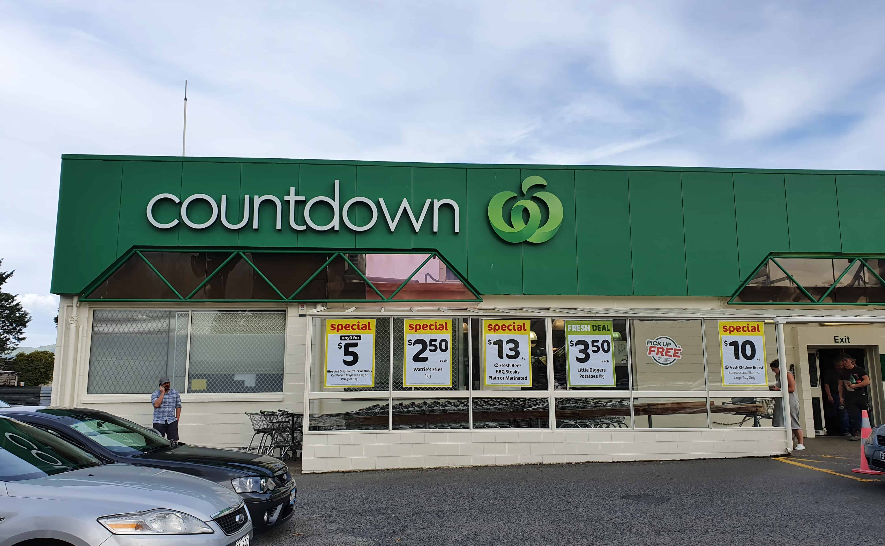

About Us
Welcome to Grocies Supermarket, your one-stop destination
for all your grocery needs in Sri Lanka!
At Grocies, we are committed to revolutionizing the way you shop for groceries
by bringing the convenience of online shopping right to your fingertips. As a
newcomer to the online market in Sri Lanka, we are dedicated to providing our
customers with a seamless and enjoyable shopping experience from the comfort of
their homes.
With Grocies, you can say goodbye to long queues and crowded aisles. Explore our
user-friendly website or mobile app to browse through a wide selection of fresh
produce, pantry staples, household essentials, and much more. Whether you're stocking
up on weekly groceries or searching for specialty items, we've got you covered.
We understand the importance of trust and reliability when it comes to online
shopping. That's why we prioritize the freshness and quality of our products,
ensuring that every item you receive meets our stringent standards. Our dedicated
team works tirelessly to handpick the finest ingredients and deliver them to your
doorstep with care and efficiency.
At Grocies, we believe in going the extra mile to exceed your expectations.
From seamless ordering and secure payment options to prompt delivery and hassle-free
returns, we strive to make your shopping experience as convenient and enjoyable as
possible.
Join us on this exciting journey as we redefine the way you shop for groceries online
in Sri Lanka. Experience the convenience, quality, and reliability of Grocies
Supermarket today. Your satisfaction is our top priority, and we look forward to
serving you with excellence every step of the way
Our Vision
Our vision is simple yet profound: to become the preferred choice for online grocery shopping in Sri Lanka. We aim to achieve this by offering an extensive range of high-quality products, competitive prices, and exceptional customer service.
Our Branches in Sri Lanka
Discover Grocies Supermarket's convenient branches scattered across Sri Lanka. With three locations strategically positioned for accessibility, shopping with us is always a breeze. Whether you're in the city center, suburban areas, or tourist spots, there's a Grocies Supermarket nearby, ready to cater to your grocery needs. Each branch is committed to providing top-quality products and excellent service, ensuring a delightful shopping experience every time. Experience the convenience of Grocies at any of our branches today!
Branch 1: Kurunegala Branch
This our main branch. It is close to the Kurunegala police station.
Branch 2: Nugegoda Branch
This is second branch.
|  |
Branche 3: Kandy(Udarata) Branch
This is the third branch.
 |
Our Branches in Sri Lanka
Discover Grocies Supermarket's convenient branches scattered across Sri Lanka. With three locations strategically positioned for accessibility, shopping with us is always a breeze. Whether you're in the city center, suburban areas, or tourist spots, there's a Grocies Supermarket nearby, ready to cater to your grocery needs. Each branch is committed to providing top-quality products and excellent service, ensuring a delightful shopping experience every time. Experience the convenience of Grocies at any of our branches today!
Branch 1: Kurunegala Branch
This our main branch. It is close to the Kurunegala police station.
 |
Branch 2: Nugegoda Branch
This is second branch.
 |
Branche 3: Kandy(Udarata) Branch
This is the third branch.
|
Our services
Experience the convenience and excellence of Grocies Supermarket's wide range of services tailored to meet your every need. From our user-friendly online shopping platform with home delivery and pickup options to our impeccably stocked shelves featuring fresh produce, pantry staples, and household essentials, we strive to make your shopping experience seamless and enjoyable. Our dedicated team is here to assist you at every step, whether you have questions about a product, need assistance with a special order, or want to take advantage of our loyalty programs and exclusive offers. At Grocies, customer satisfaction is our priority, and we're committed to providing you with nothing but the best.
| Service | Description | Available Branch |
|---|---|---|
| Online Shopping | Convenience of ordering groceries online with home delivery or pickup option | Every Branch |
| Loyalty Programs | Rewards, Discounts and special offers for loyal customers | Every Branch |
| Delivery services | Home delivery for groceries ordered online | Every Branch |
| Assistance for Seniors or Disabled | Special services or assistance for elders and disabled shoppers | Every Branch |
| 24/7 customerservvice | Get assistance anytime, anywhere | Every Branch |
| Secure Payment Options | Secure payment methods and encryption technology will save your privacy | Every Branch |